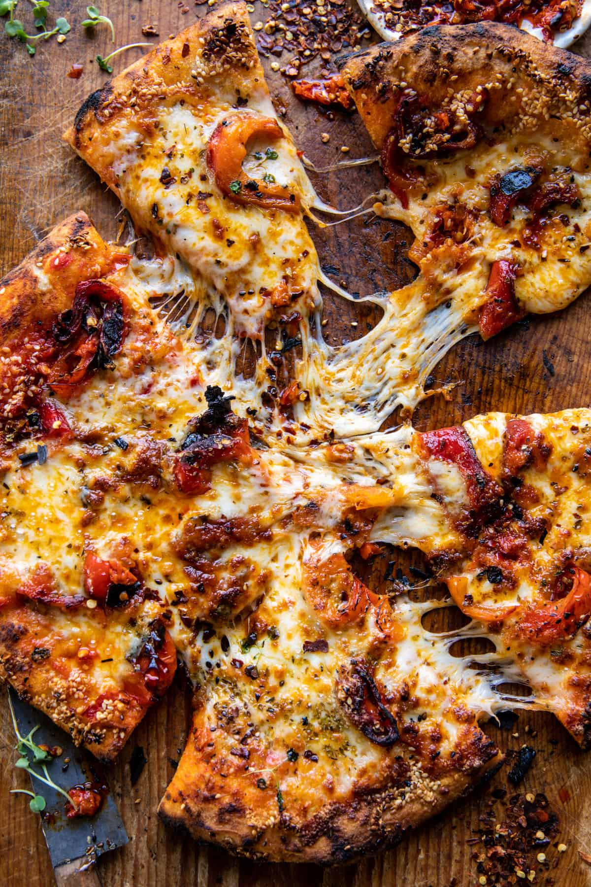

Pizza
^
Description
Pizza originated in Naples, Italy, in the 18th century. It was initially a simple dish made with flatbread topped with tomatoes, olive oil, garlic, and herbs. This early form of pizza was sold by street vendors or served in humble establishments known as pizzerias.
However, the modern pizza, as we know it today, evolved in Naples in the late 19th century. The addition of mozzarella cheese, derived from water buffalo milk, became a staple topping, leading to the creation of the famous Margherita pizza. Legend has it that this pizza was named after Queen Margherita of Italy and was topped with tomatoes, mozzarella, and basil to represent the colors of the Italian flag. Here's a basic recipe to guide you through the process:
Ingredients:
- Pizza dough (made from flour, water, yeast, salt, and olive oil)
- Tomato sauce (made from tomatoes, garlic, olive oil, and herbs)
- Mozzarella cheese (fresh or shredded)
- Toppings of your choice (such as pepperoni, mushrooms, bell peppers, onions, etc.)
- Olive oil (for drizzling)
- Italian seasoning (oregano, basil, thyme)
- Parmesan cheese, grated
- Fresh parsley, chopped (optional)
Instructions:
- Prepare the Dough:
-
Start by making or purchasing pizza dough. Roll it out into a round shape on a floured surface to your desired thickness.
- Preheat Oven:
-
Preheat your oven to the highest temperature it can reach (usually around 500°F or 260°C). If you have a pizza stone, place it in the oven to preheat as well.
- Top Pizza:
-
Spread a layer of tomato sauce over the pizza dough, leaving a small border around the edges. Add a generous amount of mozzarella cheese and your chosen toppings.
- Bake the Pizza:
-
Carefully transfer the pizza onto a preheated pizza stone or baking sheet. Bake in the preheated oven for about 10-15 minutes, or until the crust is golden brown and the cheese is bubbly and melted.
- Finish:
-
Once baked, remove the pizza from the oven and let it cool for a few minutes. Drizzle with olive oil and sprinkle with fresh basil or other herbs, if desired. Hot!
- Serve and Enjoy:
-
Serving pizza is about presentation and enjoyment. Arrange slices neatly on a platter. Offer side salads, breadsticks, and a variety of drinks. Customize toppings to cater to different preferences. Consider family-style dining for larger gatherings. Ultimately, it's about sharing good food and company, creating memorable moments together.
Making pizza at home allows for endless customization and creativity with toppings, making it a fun and delicious meal for the whole family to enjoy!